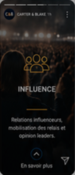

Stratégie politique
Positionner, structurer et planifier pour gagner.
- Vision & positionnement
- Analyse politique & benchmark
- Plateforme & messages clés
Le cabinet marocain de référence en stratégie politique, marketing digital, data & IA.
Notre expertise 360°
Nos expertises
Architecture, planning, war room et pilotage de campagne.
Positionnement, marque politique, narratif et image publique.
Meta, Google, TikTok, CRM, landing pages et automatisation.
Médias, presse, créateurs, réputation et leadership d’opinion.
Opinion publique, segmentation, dashboards et agents IA.
Veille temps réel, sentiment, tendances et cartographie d’influence.
Notre méthodologie
Audit stratégique
Analyse de l’opinion
Benchmark & insights
Positionnement
Narratif & messages
Stratégie & plan d’action
Campagnes & contenu
Activation digitale & média
Influence & mobilisation
Suivi en temps réel
Data & optimisation
Reporting continu
Analyse des résultats
Mesure de l’impact
Capitalisation & recommandations
Nos partenaires
Insights

Veille